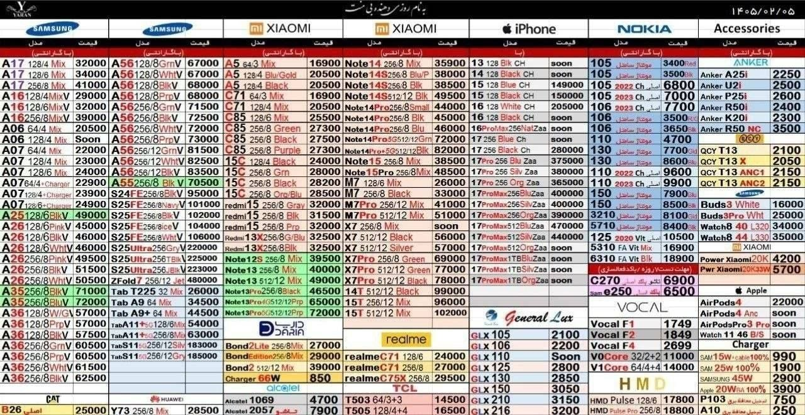

@asrnovin_ir
اگر تا الان این ربات تونسته از پولاتون محافظت کنه و از کلاهبردارا دور نگهتون داره میتونید با کپی و ارسال دستور
/donate
داخل ربات
@scameryab_bot
از ربات حمایت کنید.
هزینه های پرداختی برای تمدید سرور ربات و زنده نگهداشتن ربات استفاده میشود.
Open on TelegramOpen Single Page
🔺وضعیت عجیب و باورنکردنی قیمت گوشی های موبایل در بازار ایران!
🔹سامسونگ A56 به عنوان یک گوشی میانرده تا ۸۰ میلیون قیمت میخورد، در حالی که همین چند ماه پیش ۳۰ میلیون تومان بود!
@asrnovin_ir
Open on TelegramOpen Single Page⚡️دامینهای متصل برای متود Vercel–xhttp❗️
فقط کافیه این آدرس هارو در قسمت های Address و SNI کانفیگ VLESS خودتون جایگذاری کنید، و گزینه allowInsecure هم true بزارید.
🍷 همه تست شدند و پینگ دارند.
community.vercel.com
analytics.vercel.com
botid.vercel.com
blog.vercel.com
app.vercel.com
api.vercel.com
ai.vercel.com
cursor.com
nextjs.org
react.dev
@asrnovin_ir
Open on TelegramOpen Single Page♨️ رگولاتوری: تخلف برخی اپراتورها در عرضه «اینترنت پرو» محرز شده است.
▪️ سازمان تنظیم مقررات و ارتباطات رادیویی اعلام کرده برخی اپراتورها چارچوبهای مصوبه مربوط به ارائه اینترنت طبقاتی، موسوم به «اینترنت پرو» را رعایت نکردهاند و تخلف آنها محرز شده است.
▪️ رگولاتوری در این اطلاعیه گفته «اینترنت پرو» با مجوز «مراجع ذیصلاح» به کسبوکارها ارائه شده تا ارتباطات پایدار آنها تضمین شود.
▪️ در اطلاعیه سازمان تنظیم مقررات آمده است: «بررسیهای انجامشده نشان میدهد برخی اپراتورها از مفاد و چارچوبهای مصوبه مربوطه عدول کردهاند و تخلف آنها محرز شده است؛ بر همین اساس، گزارشهای مرتبط در حال جمعبندی است و برای طی مراحل قانونی به مراجع ذیصلاح ارائه میشود.»
▪️ مشخص نیست رگولاتوری دقیقاً به چه مصوبهای اشاره کرده، زیرا تا کنون مصوبهای درباره ارائه اینترنت طبقاتی به شکل عمومی منتشر نشده است.
Open on TelegramOpen Single Pageوزیر قطع ارتباطات:
کمترین میزان تابآوری مردم، آب و برق و گاز نیست؛ قطع اینترنت است
برخی میگویند ما در کشور نیاز به اینترنت نداریم! آدم این را نمیداند کجای دلش بگذارد.
شبانهروز تلاش میکنیم که اینترنت برگردد و با کیفیت و عادلانه در اختیار «آحاد مردم» قرار بگیرد.
Open on TelegramOpen Single Pageبابک زنجانی:
شبکه اجتماعی «مایدات» آماده بهرهبرداری میشود.
از روز سهشنبه، ۸ اردیبهشت ۱۴۰۵ با اطلاعرسانی رسمی از آدرس وب سایت٫
«مای دات»٫ ثبتنام کاربران آغاز خواهد شد.
Open on TelegramOpen Single Pageبعد از سالها جستجو، بالاخره یک دانلودکنندهی ویدیوی بینقص پیدا کردم! 🎉🎥
این برنامه ویدیوهای یوتیوب، تیکتاک، اینستاگرام و ... را یکجا دانلود میکند و امکاناتی مانند دانلود بدون واترمارک، تجزیهی دستهای و ادغام صدا/تصویر را ارائه میدهد.
فوق العاده خفن / فقط زبانش چینیه🚀📲
https://downloadhd.net
Open on TelegramOpen Single Pageپروژه عجیب در گیتهاب
ابزاری در گیتهاب به نام GhostTrack وجود دارد. فقط کافی است شماره تلفن مورد نظر را وارد کنید تا فوراً پلتفرمهایی را که آن شخص در آنها حساب کاربری ثبت کرده است، اسکن کند و همچنین میتواند آدرس IP و اطلاعات اپراتور را بررسی کند.
کد را کپی کنید و اسکریپت را اجرا کنید - این کار در عرض ۵ دقیقه انجام میشود، به طرز مسخرهای آسان. فکر میکنید در فضای آنلاین نامرئی هستید؟
شما قبلاً کاملاً در معرض خطر قرار گرفتهاید. امنیت اطلاعات چیزی است که واقعاً باید جدی بگیریم.
https://github.com/HunxByts/GhostTrack
Open on TelegramOpen Single Pageدستور رئیس قوه قضائیه درباره فروش اینترنت پرو
🔹محسنی اژهای: دادستانی کل کشور و سازمان بازرسی پیگیری کنید ببینید جریان خطهای سفید یا اینترنت پرو چیست؟
🔹گفته شده بود این خطها را فقط به افراد و اقشاری با مشخصات خاص میدهند اما الان گزارشها و اخباری هست که به برخی افراد دادهاند که ربطی به شغلشان ندارد و بابت آن چند ده میلیون تومان پول گرفتهاند.
🔹این مدل اختصاص دادن یک امکان هم تبعیض است و هم فساد.
@asrnovin_ir
Open on TelegramOpen Single Pageآموزش ساخت کانفیگ پرسرعت به روش Vercel-XHTTP
https://youtu.be/XYNaYvs5qSU
گیتهاب و دستورات مورد نیاز :
https://github.com/avaco-cloud/Vercel-XHTTP
این روش نیازمند داشتن یک سرور مجازی خارج + ساب دامین می باشد
روی بعضی لوکیشن ها ممکنه ازتون برای فعالسازی شماره تلفن بخواد پس به این نکته دقت کنید
کانفیگ نمونه جهت جایگزینی و استفاده طبق ویدیو
vless://UUID@vercel.com:443?encryption=none&security=tls&sni=vercel.com&insecure=0&allowInsecure=0&type=xhttp&host=YourApp.vecel.app&path=%2Faminiyt&mode=auto#TestVercel
Open on TelegramOpen Single Pageمعاون ارتباطات و اطلاعرسانی دفتر رئیسجمهور:
رئیسجمهور با محدودیت دسترسی مردم به اینترنت بینالمللی قویاً مخالف است
مراجع تخصصی در شرایط جنگی مخاطراتی برای بازگشایی اینترنت قائلند که قابل اعتناست. طرح اینترنت پرو که با مصوبه شورای عالی امنیت ملی در حال انجام است صرفاً راهی موقت برای دسترسیهای ضروری به اینترنت جهانی است.
@asrnovin_ir
Open on TelegramOpen Single Pageکره جنوبی دسترسی به اینترنت نامحدود رو برای ۷ میلیون نفر فراهم کرد 🆓🔥
📡 وزارت علوم و ICT کره جنوبی، سه اپراتور بزرگ این کشور (SK Telecom، KT و LG Uplus) رو موظف کرده که بعد از تموم شدن سقف مصرف ماهانه، اینترنت نامحدود با سرعت ۴۰۰ کیلوبیت بر ثانیه رو در اختیار بیش از ۷ میلیون مشترک موبایل قرار بدن.
دولت کره جنوبی رسماً اعلام کرده که دسترسی به اینترنت باید به عنوان «حق پایه ارتباطی» در نظر گرفته بشه. 😐
Open on TelegramOpen Single Pageایلان ماسک رقیب تلگرام را معرفی کرد
پیامرسان رمزگذاری شده XChat.
— گفتگوها با رمزگذاری سرتاسری؛
— حذف پیامها برای همه؛
— تماسهای صوتی یا تصویری بین دستگاهها؛
— چتهای مخفی با پیامهای ناپدیدشونده؛
— چتهای گروهی با صدها نفر و پشتیبانی از حسابهای X.
- رمزنگاری End to end encryption، چتهای محرمانه، پیامهای ناپدید شونده، تماسهای بدون شماره و هوش مصنوعی Grok
فقط برای ios 26 در دسترس
https://apps.apple.com/app/xchat/id6760873038
Open on TelegramOpen Single Page💢 سازمان نظام پرستاری: 📢 با وجود اینکه امکان برقراری اینترنت پرو برای اعضای خود را داریم، تا زمانی که همه مردم ایران به اینترنت متصل نشوند از این امکان استفاده نخواهیم کرد.
🔴 در اطلاعیه کامل سازمان نظام پرستاری:
«بسمه تعالی 📜
سازمان نظام پرستاری جمهوری اسلامی ایران به اطلاع کلیه پرستاران و مردم عزیز ایران میرساند؛ با توجه به محدودیتهای ایجادشده در دسترسی به اینترنت بینالملل بهدلیل شرایط خاص جنگی کشور و ارائه دسترسی محدود (اینترنت پرو) به برخی اقشار، امکان اعطای این امتیاز به اعضای سازمان نظام پرستاری نیز از سوی مقامات مسئول اعلام شد، لکن سازمان نظام پرستاری جمهوری اسلامی ایران براساس بررسی جوانب مختلف تا زمان رفع محدودیتهای دسترسی عموم مردم به اینترنت بینالملل، درخواست هیچ امتیاز ویژهای را برای اعضای خود نخواهد داشت.
انشالله زمانی که این امکان برای همه مردم ایران فراهم باشد، پرستاران نیز در کنار آحاد مردم از این امکان استفاده خواهند نمود.» 🤝🇮🇷
@asrnovin_ir 🔗
Open on TelegramOpen Single Page🔺 معاون امور زنان رئیسجمهور: قطع اینترنت مثل جنگ به ما تحمیل شد
🔹 معاون امور زنان و خانواده رئیسجمهور با بیان اینکه هیچکس منتظر قطعی اینترنت نبود، اظهار داشت: «این یک اتفاقی بود که مثل جنگ به ما تحمیل شد».
🔹 زهرا بهروزآذر همچنین در پاسخ به سوالی درباره زمان وصل شدن اینترنت گفت: «کاش من هم میدانستم.»
🔹 او با اشاره به پیامدهای این وضعیت بر کسبوکارها، بهویژه برای زنان اظهار داشت بخش قابل توجهی از فعالیت اقتصادی زنان در فضای مجازی جریان دارد و به همین دلیل، آنها از نخستین و بیشترین گروههایی هستند که از قطعی اینترنت آسیب دیدهاند.
@asrnovin_ir
Open on TelegramOpen Single Page🌐 بیانیه کانون وکلای سمنان در مخالفت با اینترنت طبقاتی؛ زنگ بیدارباش برای نهادهای صنفی اقتصاد دیجیتال
▪️ در روزهایی که بحث «اینترنت طبقاتی» در قالب طرحهایی مانند «اینترنت پرو» به یکی از جنجالیترین موضوعات فضای مجازی ایران تبدیل شده، کانون وکلای دادگستری سمنان با صدور بیانیهای صریح، موضعی بیسابقه اتخاذ کرده است.
▪️ این کانون نه تنها اعطای هرگونه دسترسی ویژه را مغایر با اصول بنیادین حقوقی دانسته، بلکه به طور مشخص اعلام کرده که خود از دریافت و بهرهمندی از چنین امتیازهای متمایزی خودداری میکند. فارغ از جایگاه صنفی کانون وکلا، آنچه این بیانیه را به رویدادی قابل تأمل تبدیل میکند، تقدم «عدالت» بر «منفعت مقطعی» است؛ رویکردی که انتظار داشتیم در رفتار و گفتار نهادهای صنفی اقتصاد دیجیتال و فناوری اطلاعات ببینیم.
@asrnovin_ir
Open on TelegramOpen Single Page🔴حمید رسایی:
اینترنت بلای جون مردمه
مردم ما اصلا نباید گوشی اندروید داشته باشند
پ.ن: آیفون چی؟ اصن اینترنت چه ربطی به گوشی اندروید داره ، من اصن لپتاپ دارم .
خواهشاً سیمکارت سفیدا در مورد اینترنت مردم نظر ندید
Open on TelegramOpen Single Page🔴پاول دروف:
به زودی اکثر تراکنشهای TON کاملاً بدون کارمزد خواهند بود. کمیسیون صفر!
⚡️در عرض یک هفته، کارمزدهای TON به ۶ برابر کاهش مییابد — فقط ۰.۰۰۰۳۹ TON (~۰.۰۰۰۵ دلار) به ازای هر تراکنش، ثابت بدون توجه به بار شبکه.
💬 @asrnovin_ir
Open on TelegramOpen Single Pageخبرگزاری دولت: عراقچی به اسلامآباد، مسقط و مسکو میرود
🔹رسانه دولت نوشته: وزیر امورخارجه ایران از شامگاه جمعه، سفر دورهای را به اسلام آباد، مسقط و مسکو آغاز خواهد کرد.
🔹هدف از این سفر، رایزنیهای دوجانبه، بحث و گفتوگو درباره تحولات جاری در منطقه و همچنین آخرین وضعیت جنگ تحمیلی ایالات متحده و رژیم اسرائیل علیه ایران است.
Open on TelegramOpen Single Pageاز این سایت میتونین وضعیت اینترنت ایران رو آنلاین چک کنید. طبق اطلاعات این سایت فعلا ایرانسل رکورد دار بدترین اپراتوره همه چی قطعه.
radar.chabokan.net
Open on TelegramOpen Single Page⭕مدل GPT-5.5 معرفی شد؛ هوشمندترین مدل OpenAI با تمرکز بر خودکارسازی وظایف
🔸مدل GPT-5.5 بهعنوان جدیدترین دستاورد OpenAI معرفی شد؛ مدلی که بهگفته این شرکت، هوشمندترین نسخه تا امروز محسوب میشود و با تمرکز بر خودکارسازی وظایف پیچیده و چندمرحلهای توسعه یافته است. این مدل برای بهبود عملکرد در سناریوهای واقعی طراحی شده و میتواند فرایندهای کاری را با اتکا به ابزارها، بهشکل منسجمتری مدیریت کند.
🔸در GPT-5.5 تمرکز از پاسخگویی صرف به سمت اجرای مؤثرتر وظایف تغییر کرده است؛ بهطوریکه این مدل میتواند در چارچوب یک فرایند چندمرحلهای، از ابزارهای مختلف استفاده کرده و مراحل انجام کار را با دقت بیشتری پیش ببرد. OpenAI همچنین به بهبود توانایی این مدل در تعامل با محیطهای کامپیوتری اشاره کرده که نقش آن را در انجام کارهای عملی و حرفهای پررنگتر میکند.
🔸شرکت OpenAI اعلام کرده که GPT-5.5 از امروز بهصورت تدریجی برای کاربران طرحهای پلاس، پرو، Business و Enterprise در ChatGPT و همچنین ابزار Codex منتشر میشود.
درهمینحال، نسخه پیشرفتهتر این مدل با نام GPT-5.5 Pro نیز برای کاربران Pro، Business و Enterprise در دسترس قرار خواهد گرفت.
Open on TelegramOpen Single Pageطبق خبرهایی که هنوز به صورت رسمی تایید نشده شرکت اسیاتک به دلیل قطعی اینترنت ورشکسته شده و کاربرانش رو زیرمجموعه مخابرات کرده
@asrnovin_ir
Open on TelegramOpen Single Page〰️ از آخرین اخبار تکنولوژی جهان جا نمونیم:
1. ربات انساننمای Unitree R1 در راه بازار جهانی با قیمت 4370 دلار.
2. ثبت اختراع توالت داخلی صندیل خودرو توسط یک خودروساز چینی.
3. رنگ جدید «دارک چری» احتمالی برای آیفون 18 پرو.
4. پیشنهاد ایلان ماسک برای پرداختهای دولتی به افراد بیکار شده توسط هوش مصنوعی.
5. تیم کوک پس از 15 سال، از اول سپتامبر جای خود را به جان ترنوس در اپل خواهد داد.
6. واتساپ در حال آزمایش اشتراک پولی 2.49 یورو در ماه برای کاربران اندروید.
7. اداره رگولاتوری Ofcom بریتانیا تحقیقاتی را درباره تلگرام در خصوص محتوای غیرقانونی آغاز کرده است.
8. شرکت OpenAI مدل بصری Images 2.0 را با قابلیتهای «تفکر» برای تولید تصویر معرفی کرد.
9. واتساپ در حال آزمایش خلاصهسازی پیامهای نخوانده با پردازش خصوصی توسط هوش مصنوعی.
10. اپل نقص امنیتی را برطرف کرد که میتوانست اعلانهای حذفشده را روی دستگاه نگه دارد.
11. اینتل با لپتاپ مفهومی سبکوزن خود با تراشه Wildcat Lake، رقیبی برای مکبوک نشان داد.
💬 @asrnovin_ir
Open on TelegramOpen Single Page#هوش_مصنوعی
♨️ اپن ای آی از نسخه اختصاصی ChatGPT برای پزشکان رونمایی کرد 🏥🤖
🔸 این نسخه تخصصی که ChatGPT for Clinicians نام دارد، بهصورت رایگان در دسترس برخی متخصصان حوزه سلامت قرار گرفته و با هدف سادهکردن فرایندهای کاری بالینی مانند مستندسازی 📝، تحقیقات پزشکی 🔬 و پاسخگویی به سؤالات مرتبط طراحی شده است.
🔸 ازجمله مهمترین قابلیتهای ChatGPT for Clinicians به دسترسی به جدیدترین مدلهای پیشرو هوش مصنوعی که برای حوزه سلامت تنظیم شدهاند 🧠، قابلیت جستجوی بالینی برای پیدا کردن پاسخهای موردنیاز متخصصان از میان منابع پزشکی 🔍، و ابزارهای تحقیق عمیق (Deep Research) برای مرور متون و مقالات پزشکی 📚 و تدوین گزارشهای جامع اشاره شده است. OpenAI در معرفی این مدل تأکید کرده که ChatGPT for Clinicians برای کمک به پزشکان طراحی شده و نمیتواند جایگزین آنها باشد ⚕️
Open on TelegramOpen Single Pageمسیر فریلنسرها برای دسترسی به اینترنت بینالملل
🔹فریلنسرها (آزادکاران) برای دریافت «اینترنت پرو» باید عضو سازمان نظام صنفی رایانهای کشور (نصر) شوند.
🔹پس از ثبتنام و در صورت احراز شرایط، متقاضیان مشابه سایر اعضا و در چارچوب هماهنگی با مرکز ملی فضای مجازی، به این سرویس و امکانات مورد نیاز دسترسی پیدا خواهند کرد.
🔹فریلنسرهایی که پیشتر عضو نصر بودهاند، در صورت ثبت درخواست، موفق به دریافت این خدمت شدهاند.
🔹«اینترنت پرو» نوعی دسترسی به اینترنت بینالملل است که با مصوبه شورای عالی امنیت ملی و برای استفاده در شرایط خاص و بحرانی طراحی شده است.
Open on TelegramOpen Single Pageرفقا یه نکته امنیتی خیلی مهم در مورد روش MasterHttpRelayVPN! ⚠️
اگر چندتا اکانت گوگل دارید، بهتره از gmail اصلی خودتون برای راهاندازی استفاده نکنید.
چون این ابزار ترافیک رو از طریق اسکریپتهای گوگل رد میکنه و به خاطر مصرف بالا و دور زدن قوانین، احتمال داره باعث مسدودی بشه.
Open on TelegramOpen Single Page🔴معاون اول رئیسجمهور: اینترنت امروز به یکی از نیازهای اساسی مردم تبدیل شده و باید بهعنوان یک حق عمومی برای همه شهروندان به رسمیت شناخته شود
🔹 هرگونه محدودسازی یا ایجاد تبعیض در دسترسی به اینترنت، موجب شکاف در بهرهمندی از فرصتهای دیجیتال خواهد شد و باید از آن پرهیز شود.
Open on TelegramOpen Single Pageانتقال فایل از طریق تلگرام به روبیکا برای کاهش مصرف فیلترشکن
پروژه عالی که دوست عزیزمون caffeinexz ساخته و روی گیتهاب به صورت اپن سورس منتشر کرده و منم ویدیو کامل راه اندازیش رو براتون آماده کردم.
لینک گیتهاب پروژه :
https://github.com/caffeinexz/Tele2Rub
مشاهده ویدیو آموزش راه اندازی در یوتیوب :
https://youtu.be/Yzbv93xaHoE
به راحتی میتونید تا سقف 2 گیگ فایل از تلگرام به روبیکا بفرستید و با نت ملی فایل رو دانلود کنید
Open on TelegramOpen Single Pageصرافی ال بانک با نت ملی در دسترسی قرار گرفت
کافیه اپلیکیشن ال بانک رو به آخرین نسخه به روز رسانی کنید تا بتونید با نت ملی از این صرافی استفاده کنید
اگر اولین باره میخوایید از این صرافی استفاده کنید با این لینک ثبت نام کنید تا بهتون بونوس تعلق بگیره و هنگام خرید و فروش کارمزد کمتری بدید
https://lbank.com/ref/3MG2K
Open on TelegramOpen Single Pageیک پروژه بسیار عالی برای ارسال فایل از ربات تلگرام به ربات بله
https://github.com/ixabolfazl/telegram-to-bale-file-transfer-bot
این پروژه روی ورکر کلودفلر قابل نصب و فعالسازی هست و بعد از اجرا شما میتونید فایل های که نیاز دارید رو داخل ربات تلگرام ارسال کنید ، سپس فیلترشکن خودتون رو خاموش کنید و اون فایل رو از طریق ربات پیام رسان بله دانلود و ذخیره کنید
Open on TelegramOpen Single Page🔴محدودیتهای جدید ارتباطی در راه است!
🔴 برای هر خط: روزانه حداکثر ۳۰۰ پیامک و ۵ گیگ اینترنت بینالملل (رایتل: ۲ گیگ)
🔴 این قانون برای همه کاربران، حتی خطوط سفید، بدون استثنا اجرا میشود
🔴 با رسیدن به سقف، دسترسی تا ۰۰:۰۰ روز بعد قطع خواهد شد
🔴 محدودیت اینترنت بیشتر روی پلتفرمهای پرکاربرد مثل تلگرام، اینستاگرام، واتساپ، یوتیوب و توییتر است
🔴 بدون اطلاع قبلی اجرا شده و فقط نزدیک سقف از طریق پیامک خبردار میشوید
🔴 زمان دقیق اجرا هم مشخص نیست؛ برخی میگویند همین چند روز اخیر، برخی از دیماه
هنوز هیچ منبع معتبری در رابطه با این محدودیت توضیحی نداده..
@asrnovin_ir
Open on TelegramOpen Single Pageاینترنت پرو همراه اول که قرار بود دسترسی بدون فیلتر به اینترنت را برای برخی مخاطبان خاص این اپراتور فراهم کنند،محدودیت حجم استفاده در ۲۴ ساعت دارد
برخی کاربران همراه اول میگویند پس از مدتی کوتاه استفاده از سرویس اینترنت پرو، برای آنها پیامکی مبنی بر اتمام حجم استفاده از اینترنت بینالملل ارسال میشود
یعنی چی: یعنی مثلا ۲ گیگ که مصرف کردی از ۵۰ گیگ دیگه قطع میشه تا فردا😂
Open on TelegramOpen Single Page🔴 اینترنت رسماً و شرعاً طبقاتی شده! 📉 اساتید دانشگاه، پژوهشگران، کسبوکارها و حالا پزشکان 🩺 میتونن درخواست بدن تا اینترنت پرو داشته باشن...
Open on TelegramOpen Single Pageخبرنگار المیادین در اسلام آباد:
تماس های فشرده ای از سوی مقامات پاکستانی برای برگزاری دور دوم و رسیدن به تفاهم واقعی در حال انجام است.
Open on TelegramOpen Single Pageثبت نام با شماره کشور های دیگه در پیامرسان بله امکان پذیر شد ❤️
✅ باید اون شماره حساب تلگرام داشته باشه چون کد به حساب تلگرام شخص ارسال میشه
@asrnovin_ir
Open on TelegramOpen Single Pageاین خبری که گذاشتیم در رابطه با اپراتور بابک زنجانی با نام دات وان سل
یه سری کلاهبردار اومدن کانال زدن در این مورد و با وعده خرید و دسترسی به اینترنت بین الملل دارن کلاهبرداری می کنند خیلی مراقب باشید و اصلا اقدام به خرید نکنید
Open on TelegramOpen Single Pageخب کل اینترنت مملکت رو بردن پشت NAT
خودتون میتونید از اینجا ببینید که IP خارجی شما چیه:
hcaptcha.com/cdn-cgi/trace
به نظر من استفاده از NAT یه راهکار موقته واسه اینکه هم بتونن اینترنت رو به صورت محدود متصل نگه دارن و هم با روشهای دور زدن فیلترینگ مقابله کنن.
این کار یه پیام روشن داره و اونم اینه که الگوریتمها و الگوهای شناسایی ترافیک غیرمجاز که داخل سیستمهای فیلترینگ استفاده میشه، توانایی مقابله کم هزینه با روشهای اخیر دور زدن فیلترینگ رو نداره. در نتیجه تنها راهکار موثری که میمونه اینه که تا زمانی که منابع جدید به سیستم اصافه نشده یا الگوریتمهای بهینهتر پیدا نشده، دست به دامن استفاده از تجهیزات استاندارد و پاخورده شبکه مثل روترهای قوی با قابلیت stateful NAT بشن و ترافیک TCP رو داخل کشور terminate کنن، بعدش اون ترافیک رو از فیلترینگ عبور بدن.
با این روش به جای اینکه تلاش بشه با روشهای آماری و DPI و in software داخل هر بسته بررسی بشه، کار اعتبار و صحتسنجی ارتباطات TCP به NAT router ها offload میشه که این کار رو in hardware، با منابع کمتر و سریعتر انجام میدن و قیمت کمتری دارن و میشه راحت خریدشون.
اصولا وقتی پای NAT وسط بیاد، دیگه شما نمیتونید بستههای فیک با checksum اشتباه بفرستید چون NAT router دوباره checksum رو حساب میکنه و بسته رو دور میندازه.
ولی همچنان با TCP sequence number و TTL کاری نداره.
از اونجایی که امکان بررسی مستقیم بستهای که از ایران به سمت سرور خارج از کشوری که دست من باشه وجود نداره (چون فقط یه سری IPهای محدود باز هستن) نمیشه در این مورد قطعا نظر داد ولی اگه سروری دارید که میشه از ایران مستقیما دیدش (نه پشت CDN) میتونید این رو تست کنید ببینید چه بلایی سر seq و ttl میاد.
به هر صورت این مساله از نظر من یه شکست بزرگ برای فیلترینگ ایران محسوب میشه.
واسه اینم به زودی یه راهی پیدا میشه!
منبع:
https://x.com/aleskxyz/status/2045846066159833574?s=19
Open on TelegramOpen Single Pageوقتی داری برای اینترنت پرو ثبت نام میکنی یادت باشه که داری با دست خودت اینترنت طبقاتی رو امضا می کنی و بزرگترین خیانت رو به همه مردم ایران میکنی.
نخرید تا برا همه وصل بشه
Open on TelegramOpen Single Pageاتصال اینترنت بینالملل اساتید برقرار شد
«بکائی» رئیس دانشگاه الزهرا (س) :
با توجه به تصمیم وزارت علوم، روند آموزشها به صورت مجازی ادامه دارد و دفاع پایاننامهها نیز آنلاین برگزار میشود.
همچنین اینترنت بینالملل اساتید وصل شده و اتصال کامل شبکه دانشگاه در حال پیگیری است.
@asrnovin_ir
Open on TelegramOpen Single Pageیه زمانی پیش خودم میگفتم جلوی تکنولوژی نمیشه گرفت و فیلترچی هرچقدر تلاش کنه باز یه روش جدیدی میاد که بتونه فیلترینگ رو دور بزنه
نکه نیاد ، روش جدید میاد مثل همین sni spoofing و میگفتن اگه بخوان جلوی این روش رو بگیرن هزینه های بسیار زیادی براشون داره ، ولی کمتر از چند روز این روش هم بسته شد.
به زمانی چین به ایران آپدیت فایروال میداد برای توسعه فیلترینگ ، الان فکر کنم ایران آپدیت های جدید رو میده به چین🤦♂
Open on TelegramOpen Single Pageطبق اطلاعیه ircf این سایت ها از مسیر عادی و بین الملل در دسترس نیستند
بلکه از یک مسیر داخلی دستکاری شده عبور می کنند و شما میتونید بهشون دسترسی داشته باشید و خب از لحاظ امنیتی ممکنه مشکل ساز باشه
Open on TelegramOpen Single Page FarahVPN | فراح وی پی ان
FarahVPN | فراح وی پی ان
 کریپتو و ایردراپ شیروانی
کریپتو و ایردراپ شیروانی
 CongNet VPN | کانگنت ویپیان
CongNet VPN | کانگنت ویپیان
 اطلاع رسانی Max VPN
اطلاع رسانی Max VPN
 Proxy MTProto | پروکسی
Proxy MTProto | پروکسی
 یـ بـ خـ
یـ بـ خـ
 ToxicVid | VPN
ToxicVid | VPN
 IVX
IVX
 کانفیگ vpn ویتوری نت ملی🇮🇷
کانفیگ vpn ویتوری نت ملی🇮🇷
 IP_CF | Channel
IP_CF | Channel
 RezZone
RezZone
 Proxy-MmDFreak | چت = بن
Proxy-MmDFreak | چت = بن
 Free vpn | V2rayng | Napsternetv
Free vpn | V2rayng | Napsternetv
 ElectVPN | الکت وی پی ان
ElectVPN | الکت وی پی ان
 xsfilternet
xsfilternet
 کورد کانفیگ
کورد کانفیگ
 عصر نوین| AminiYT
عصر نوین| AminiYT